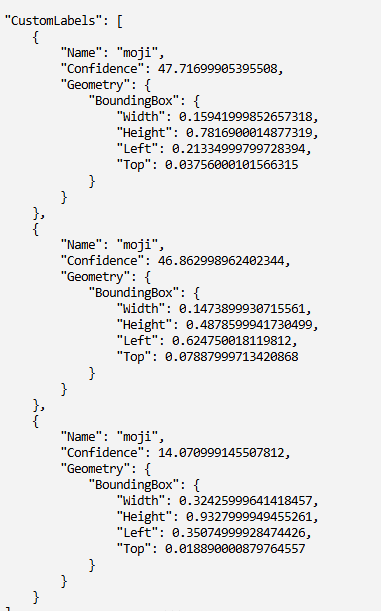

点字画像認識AI
カメラ画像から点字を解析し、テキストへ変換するシステム。Amazon Rekognitionを活用し、点字のデジタルパターンを識別するモデルを構築しました。
※現在、AWSアカウントの期限満了に伴いソースコードおよび環境の閲覧が不可となっているため、開発当時の資料と推論結果を基に構成しています。
使用技術
- AWS: Rekognition, SageMaker (Ground Truth), S3
- Python: Pillow (データセット完全自作・自動生成用)
開発計画とステップ
本プロジェクトでは、最終的な文章認識を見据えて以下の3段階で開発を計画しました。
- 一文字認識： 個別の点字がどの文字に該当するかを学習
- 文章分割： 画像内のどこに文字があるかを特定（文字範囲の抽出）
- 文章認識： 分割した各文字を順番に推論し、文字列として再構成
技術的な工夫とプロセス
1. データセットの自作 (Python Pillow)
日本語の点字画像データセットが一般に公開されていなかったため、学習に必要なデータを自作しました。PythonのPillowライブラリを用いて「あ」〜「ん」、濁音、句読点、数字の画像を各100枚ずつ、計数千枚を自動生成し、独自にラベル付けを行ったデータセットを構築しました。
2. 文字範囲の検出 (Bounding Box)
Amazon SageMaker Ground Truthを使用し、画像内の点字位置を特定するためのラベリングを実施。文字の内容を区別せず「範囲」に特化した学習を行うことで、解析の基礎となる分割モデルを作成しました。

SageMakerによる文字範囲の指定
推論結果と分析

AWS Rekognitionからのレスポンスデータ
成果: 自作したデータセットのみで学習を行った結果、一文字認識において信頼度90%以上を達成しました。
課題: 文章全体の認識においては、文字範囲は検出できるものの、正確な分割がうまくいかず文字数が合わないといった課題が残りました。
展望: より精度の高い分割を実現するため、今後は合成画像だけでなく、実際に撮影した多様な実写データの拡充が必要であることを確認しました。